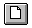
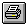
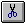
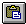
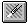

The toolbar is displayed across the top of the application window, below the menu bar. The toolbar provides quick mouse access to many tools used in the Social Security Benefit Calculator.
To hide or display the Toolbar, choose Toolbar from the View menu (ALT, V, T).
Open a new case.
 Open an existing case. The Social Security Benefit Calculator displays the Open dialog box, in which you can locate and open the desired file.
Open an existing case. The Social Security Benefit Calculator displays the Open dialog box, in which you can locate and open the desired file.
Save the active case with its current name. If you have not named the document, the Social Security Benefit Calculator displays the Save As dialog box.
Print the active case.
 (Not currently implemented.)
(Not currently implemented.)
 (Not currently implemented.)
 (Not currently implemented.)